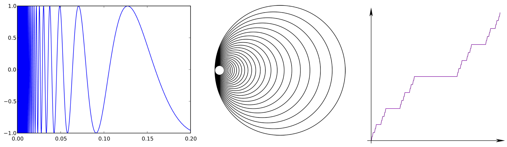
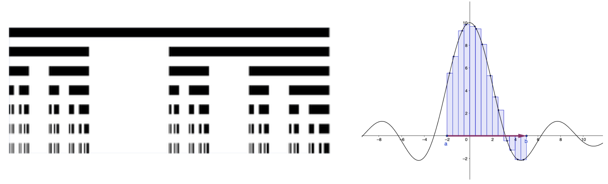

This is an introductory course in real analysis. After covering the foundations of the real numbers and (naive) set theory, we will discuss metric spaces, elementary topology, calculus, and function space theory. While many of these subjects, for example the real numbers or calculus, will be quite familiar to you, we will take a much more rigorous approach than you've likely seen before, proving all important results and not taking anything for granted. As you will see, our human intuition can sometimes lead us astray, and many pathologies and exotica arise if we are not extremely careful with our assumptions.
For many students this may be their first course in rigorous pure mathematics. As such, this is a challenging course despite the seemingly simple subject material. We will put particular emphasis on learning how to invent and write careful mathematical proofs.
We will assume familiarity with calculus, especially limits, continuity, integration, differentiation, the fundamental theorem of calculus, and so on. We will also assume some familiarity with the basic structure of mathematical proofs, especially proof by induction, reductio ad absurdum, etc.
Some of the topics we will cover over the course of the semester (time permitting) include:
Note: we will be roughly following the first three chapters of Pugh, and parts of the fourth chapter, time permitting. I strongly recommend that you the relevant sections in advance so that you can get more out of the lectures. You might find it helpful to reread some of the sections several times, and to try to prove some of the theorems on your own before reading the proof. If you have additional time, as an additional reference I recommend the well-known book by Rudin.
The material of this course will roughly follow the first three chapters of the textbook by Pugh (including some but not all of the more advanced subsections), plus parts of the fourth chapter (time permitting). In addition to the material covered in lecture, students will be expected to follow along with the material in the textbook, ideally in advance of the lectures.
The lectures and discussion sessions will be held via Zoom. The links and passwords can be found on Blackboard. Afterwards, Zoom recordings will appear on Blackboard. I strongly urge all students to attend the live lectures and discusssions if at all possible. Moreover, you are encouraged to actively participate by following along and asking and answering questions. We prefer that you turn on your video feed (unless bandwidth issues arise) in order to create a more responsive and social atmosphere.
We understand that in some cases certain students will not be able to attend all live lectures due to time zone difficulties or other extenuating circumstances. In this case you should let the instructor know beforehand, and it is your responsibility to follow along with the recordings and other class materials.
The lectures will primarily involve notes written in real time on an ipad. In addition to viewing lectures in Zoom via screen sharing, you will have the option of viewing the lecture notes in real time via this link. Some of you might find this useful if you wish to backreference something that happened earlier in the lecture. The completed past lecture notes will also be stored there. Note: the syncing is not instanteous, so you may sometimes need to refresh the document.
In addition to the lectures, there will be weekly problem sets. These will be listed on this website (see the schedule below) and will be handed in via Gradescope. Late homeworks will not be accepted. However, we will drop the lowest problem set score.
Much of the course material will be developed in the problem sets. It is very important to do all of the problem sets to the best of your ability and to challenge yourself to solve the problems on your own, as this is the most effective way to absorb the material. We expect students to devote a significant amount of time to the problem sets.
While working on the problem sets, you are allowed to consult or collaborate with your peers, as well as textbooks and the internet (apart from cheating websites such as Chegg or Cramster). However, you must write down attributions for any peer, textbook, website etc from which you took any significant ideas. Moreover, you must attempt all problems on your own and your submitted solutions must be written out originally and individually. Submissions which are copied or suspiciously similar are subject to being rejected and potential disciplinary action.
There will be two midterm exams (roughly one third and two thirds of the way through the semester) and one final exam, which will take place via Gradescope. The midterms will occur during usual class time, with accomodations for students in different time zones. See the schedule below for tentative dates. Please keep in mind that the first midterm occurs very early - don't be caught off guard!
Homeworks: 25%, midterm exams: 20% each, final exam: 35%. We will drop the lowest homework grade.
Kyler will hold weekly office hours via Zoom. During the first week of class, these will be held immediately after the lectures, or by email appointment. Subsequently, you will sign up for office hours via this signup sheet. We will use the same Zoom link as the main lecture for that day. The schedule will be updated every one or two weeks. You should sign up at least 15 minutes (and preferably one hour) beforehand to make sure that Kyler shows up. Note that it is perfectly fine for several people to sign up for the same time slot, or you can just show up to any time slot where someone has already signed up. On the other hand, if you would like to have private office hours (e.g. to discuss a sensitive matter) please indicate so in the comment when you sign up. Also feel free to write in the comments what you would like to discuss, which might be helpful for other students with similar interests. If you would like to attend office hours with Kyler but cannot make any of these times, please don't hesitate to send Kyler an email and he will try his best to accommodate. Note: please do not send substantive math questions to Kyler via email.
Kyler's weekly office hours are currently:
Linfeng's office hours will be held via the Math Center. You are also encouraged to seek guidance in the Math Center even if you cannot attend Linfeng's office hours.
| Date | Material | References | Problem Set |
|---|---|---|---|
| Monday 8/17/20 | Introduction and course logistics. Three disturbing examples: space-filling curves, the devil's staircase, and the Riemann rearrangement theorem. | Pugh: preface, §1.1 | Problem set 1 (due Wednesday 8/26/20 by 11:59pm LA time). |
| Wednesday 8/19/20 | Naive set theory. Sets, maps, injections, surjections, equivalence relations. | § 1.1 | |
| Friday 8/21/20 | More set theory. Unions, intersections, differences, partitions. Bijections and invertible maps. Russel's paradox. | § 1.1 | |
| Monday 8/24/20 | Dedekind cuts and construction of the real numbers. | § 1.2 | Problem set 2 (due Wednesday 9/2/20 by 11:59pm LA time). |
| Wednesday 8/26/20 | Properties of the real numbers. Proof of the least upper bound property. | § 1.2 | |
| Friday 8/28/20 | More on the real numbers. Cauchy sequences and completeness of the real numbers. | § 1.2 | |
| Monday 8/31/20 | More on Cauchy sequences and completeness of the real numbers. | § 1.2, §1.3 | |
| Wednesday 9/2/20 | Euclidean space and inner product spaces. | §1.2, §1.3 | Problem set 3 (due Wednesday 9/9/20 by 11:59pm LA time). |
| Friday 9/4/20 | Cardinality and uncountability of the real numbers. | §1.4 | |
| Monday 9/7/20 (labor day - NO CLASS) | |||
| Wednesday 9/9/20 | More on cardinality. | §1.4, §1.5 | |
| Friday 9/11/20 | More on cardinality. Preview of calculus. | §1.5, §1.6 | |
| Monday 9/14/20 | Midterm 1 (tentative date) | ||
| Wednesday 9/16/20 | |||
| Friday 9/18/20 | |||
| Monday 9/21/20 | |||
| Wednesday 9/23/20 | |||
| Friday 9/25/20 | |||
| Monday 9/28/20 | |||
| Wednesday 9/30/20 | |||
| Friday 10/2/20 | |||
| Monday 10/5/20 | |||
| Wednesday 10/7/20 | |||
| Friday 10/9/20 | |||
| Monday 10/12/20 | |||
| Wednesday 10/14/20 | |||
| Friday 10/16/20 | |||
| Monday 10/19/20 | Midterm 2 (tentative date) | ||
| Wednesday 10/21/20 | |||
| Friday 10/23/20 | |||
| Monday 10/26/20 | |||
| Wednesday 10/28/20 | |||
| Friday 10/30/20 | |||
| Monday 11/2/20 | |||
| Wednesday 11/4/20 | |||
| Friday 11/6/20 | |||
| Monday 11/9/20 | |||
| Wednesday 11/11/20 | |||
| Friday 11/13/20 |